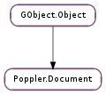

| static | new_from_data(data, length, password) |
| static | new_from_file(uri, password) |
| find_dest(link_name) | |
| get_attachments() | |
| get_author() | |
| get_creation_date() | |
| get_creator() | |
| get_form_field(id) | |
| get_id() | |
| get_keywords() | |
| get_metadata() | |
| get_modification_date() | |
| get_n_attachments() | |
| get_n_pages() | |
| get_page(index) | |
| get_page_by_label(label) | |
| get_page_layout() | |
| get_page_mode() | |
| get_pdf_version() | |
| get_pdf_version_string() | |
| get_permissions() | |
| get_producer() | |
| get_subject() | |
| get_title() | |
| has_attachments() | |
| is_linearized() | |
| save(uri) | |
| save_a_copy(uri) |
| Name | Type | Flags | Description |
|---|---|---|---|
| author | str | r | The author of the document |
| creation-date | int | r | The date and time the document was created |
| creator | str | r | The software that created the document |
| format | str | r | The PDF version of the document |
| format-major | int | r | The PDF major version number of the document |
| format-minor | int | r | The PDF minor version number of the document |
| keywords | str | r | Keywords |
| linearized | bool | r | Is the document optimized for web viewing? |
| metadata | str | r | Embedded XML metadata |
| mod-date | int | r | The date and time the document was modified |
| page-layout | Poppler.PageLayout | r | Initial Page Layout |
| page-mode | Poppler.PageMode | r | Page Mode |
| permissions | Poppler.Permissions | r | Permissions |
| producer | str | r | The software that converted the document |
| subject | str | r | Subjects the document touches |
| title | str | r | The title of the document |
| viewer-preferences | Poppler.ViewerPreferences | r | Viewer Preferences |
None
Bases: GObject.Object
| Parameters: | |
|---|---|
| Raises: | |
| Returns: | A newly created Poppler.Document, or None |
| Return type: |
Creates a new Poppler.Document. If None is returned, then error will be set. Possible errors include those in the #POPPLER_ERROR and #G_FILE_ERROR domains.
| Parameters: | |
|---|---|
| Raises: | |
| Returns: | A newly created Poppler.Document, or None |
| Return type: |
Creates a new Poppler.Document. If None is returned, then error will be set. Possible errors include those in the #POPPLER_ERROR and #G_FILE_ERROR domains.
| Parameters: | link_name (str) – a named destination |
|---|---|
| Returns: | The Poppler.Dest destination or None if link_name is not a destination. Returned value must be freed with Poppler.Dest.free |
| Return type: | Poppler.Dest |
Finds named destination link_name in document
| Returns: | a list of available attachments. |
|---|---|
| Return type: | [Poppler.Attachment] |
Returns a GLib.List containing Poppler.Attachment s. These attachments are unowned, and must be unreffed, and the list must be freed with GLib.List.free ().
| Returns: | a new allocated string containing the author of document, or None |
|---|---|
| Return type: | str |
Returns the author of the document
| Returns: | the date the document was created, or -1 |
|---|---|
| Return type: | int |
Returns the date the document was created as seconds since the Epoch
| Returns: | a new allocated string containing the creator of document, or None |
|---|---|
| Return type: | str |
Returns the creator of the document. If the document was converted from another format, the creator is the name of the product that created the original document from which it was converted.
| Parameters: | id (int) – an id of a Poppler.FormField |
|---|---|
| Returns: | a new Poppler.FormField or None if not found |
| Return type: | Poppler.FormField |
Returns the Poppler.FormField for the given id. It must be freed with GObject.Object.unref ()
| Returns: | True if the document contains an id, False otherwise |
|---|---|
| Return type: | bool, permanent_id: str, update_id: str |
Returns the PDF file identifier represented as two byte string arrays of size 32. permanent_id is the permanent identifier that is built based on the file contents at the time it was originally created, so that this identifer never changes. update_id is the update identifier that is built based on the file contents at the time it was last updated.
Note that returned strings are not null-terminated, they have a fixed size of 32 bytes.
| Returns: | a new allocated string containing keywords associated to document, or None |
|---|---|
| Return type: | str |
Returns the keywords associated to the document
| Returns: | a new allocated string containing the XML metadata, or None |
|---|---|
| Return type: | str |
Returns the XML metadata string of the document
| Returns: | the date the document was most recently modified, or -1 |
|---|---|
| Return type: | int |
Returns the date the document was most recently modified as seconds since the Epoch
| Returns: | Number of attachments |
|---|---|
| Return type: | int |
Returns the number of attachments in a loaded document. See also Poppler.Document.get_attachments ()
| Returns: | Number of pages |
|---|---|
| Return type: | int |
Returns the number of pages in a loaded document.
| Parameters: | index (int) – a page index |
|---|---|
| Returns: | The Poppler.Page at index |
| Return type: | Poppler.Page |
Returns the Poppler.Page indexed at index. This object is owned by the caller.
| Parameters: | label (str) – a page label |
|---|---|
| Returns: | The Poppler.Page referenced by label |
| Return type: | Poppler.Page |
Returns the Poppler.Page reference by label. This object is owned by the caller. label is a human-readable string representation of the page number, and can be document specific. Typically, it is a value such as “iii” or “3”.
By default, “1” refers to the first page.
| Returns: | a Poppler.PageLayout that should be used when the document is opened |
|---|---|
| Return type: | Poppler.PageLayout |
Returns the page layout that should be used when the document is opened
| Returns: | a Poppler.PageMode that should be used when document is opened |
|---|---|
| Return type: | Poppler.PageMode |
Returns a Poppler.PageMode representing how the document should be initially displayed when opened.
| Returns: | the major and minor PDF version numbers |
|---|---|
| Return type: | major_version: int, minor_version: int |
| Returns: | a new allocated string containing the PDF version of document, or None |
|---|---|
| Return type: | str |
Returns the PDF version of document as a string (e.g. PDF-1.6)
| Returns: | a set of falgs from Poppler.Permissions enumeration |
|---|---|
| Return type: | Poppler.Permissions |
Returns the flags specifying which operations are permitted when the document is opened.
| Returns: | a new allocated string containing the producer of document, or None |
|---|---|
| Return type: | str |
Returns the producer of the document. If the document was converted from another format, the producer is the name of the product that converted it to PDF
| Returns: | a new allocated string containing the subject of document, or None |
|---|---|
| Return type: | str |
Returns the subject of the document
| Returns: | a new allocated string containing the title of document, or None |
|---|---|
| Return type: | str |
Returns the document’s title
| Returns: | True, if document has attachments. |
|---|---|
| Return type: | bool |
Returns True of document has any attachments.
| Returns: | True if document is linearized, False otherwhise |
|---|---|
| Return type: | bool |
Returns whether document is linearized or not. Linearization of PDF enables efficient incremental access of the PDF file in a network environment.
| Parameters: | uri (str) – uri of file to save |
|---|---|
| Raises: | GLib.GError |
| Returns: | True, if the document was successfully saved |
| Return type: | bool |
Saves document. Any change made in the document such as form fields filled, annotations added or modified will be saved. If error is set, False will be returned. Possible errors include those in the #G_FILE_ERROR domain.
| Parameters: | uri (str) – uri of file to save |
|---|---|
| Raises: | GLib.GError |
| Returns: | True, if the document was successfully saved |
| Return type: | bool |
Saves a copy of the original document. Any change made in the document such as form fields filled by the user will not be saved. If error is set, False will be returned. Possible errors include those in the #G_FILE_ERROR domain.